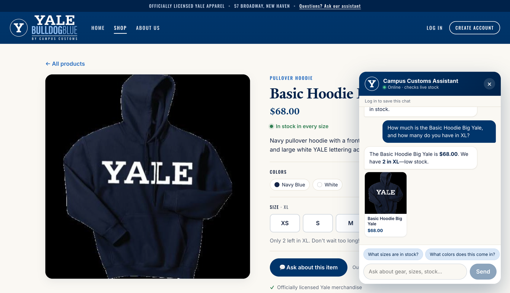
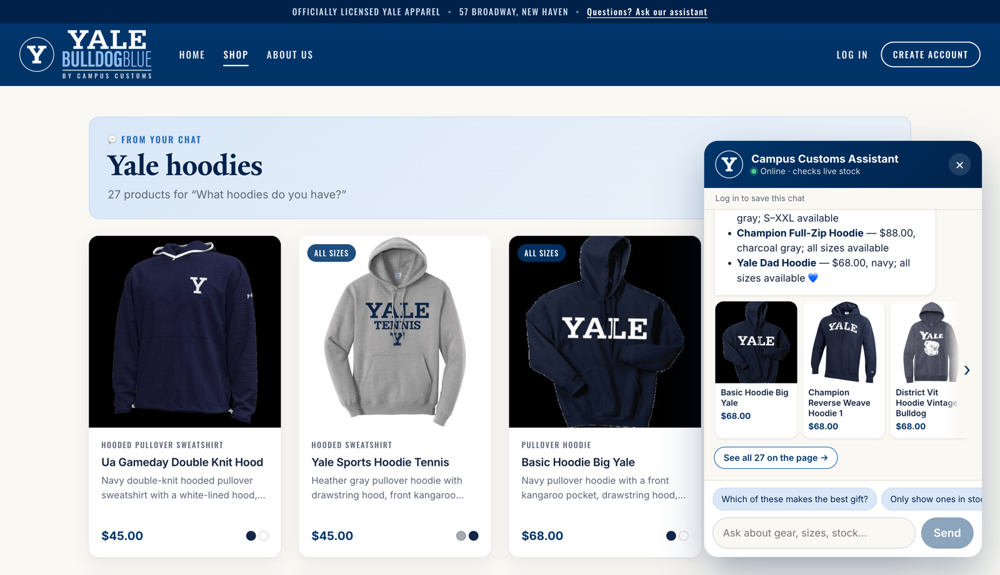
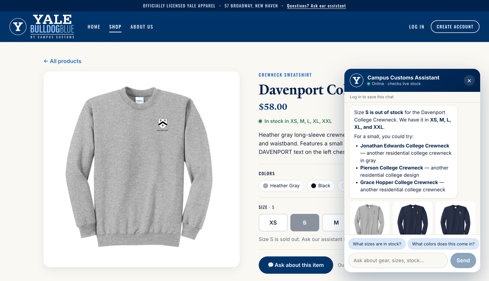

How these were run: the live site (React front end at localhost:5173, FastAPI backend at
localhost:8000) in a fresh browser session as a guest. Each chat answer is a real reply from the
PydanticAI agent (gpt-5.6-luna via Portkey), which reads data/campus_customs.db through its tools.
Expected values were checked against the database directly.
| # | Check | Result | Screenshot |
|---|---|---|---|
| 1 | Chat reports price and inventory for an item from the database | ✓ Pass | inventory.png |
| 2 | Dynamic search-result cards appear on the page after a category question | ✓ Pass | search_results.png |
| 3 | Usability feature (Problem 9, B1): in-stock alternatives when a size is sold out | ✓ Pass | usability_sold_out_alternatives.png |
1. Chat checks price and inventory from the database PASS
Asked about the Basic Hoodie Big Yale, the assistant answered $68.00 and 2 in XL (low stock), exactly the database values, and the product page beside it shows the same "Only 2 left in XL."

Test details
- Question asked
- "How much is the Basic Hoodie Big Yale, and how many do you have in XL?"
- Assistant reply
- "The Basic Hoodie Big Yale is $68.00. We have 2 in XL—low stock."
- Database
catalogue.price= 68.0;inventoryXL = 2 (all sizes: XS 15, S 5, M 5, L 8, XL 2, XXL 25)- Tool used
get_product_info(readscatalogueandinventory)
2. Dynamic search-result cards after a category question PASS
After asking "What hoodies do you have?" from the Home page, the main page switched to a "Yale hoodies" results grid of all 27 hoodies (matching the 27 hoodies in the database), while the chat shows its top picks as scrollable cards with a "See all 27 on the page" link.

/products?view=chat: "From your chat · Yale hoodies · 27 products", product cards, and chat cards.Test details
- Question asked
- "What hoodies do you have?" (asked on the Home page)
- Page after reply
- Navigated to
/products?view=chat; heading "Yale hoodies"; 27 product cards - Chat cards
- Basic Hoodie Big Yale, Champion Reverse Weave Hoodie 1, District Vit Hoodie Vintage Bulldog, Yale Sports Hoodie Hockey, Champion Full Zip Hood, Yale Dad Hoodie
- How it works
- The agent returns
page_results; the API turns the ids into product cards from the database; the site shows them on the Products page. Clicking a card opens that product's page.
3. Usability feature: in-stock alternatives for a sold-out size PASS
On the Davenport College Crewneck page (size S shown as sold out), asking "Is this in a small?" got a clear "Size S is out of stock" plus three similar crewnecks that do have size S, shown as cards. The customer didn't have to name the product, and gets options instead of a dead end.

Test details
- Feature
- Problem 9, B1:
find_similar_items/similar_in_stock(seeoutput/usability.md) - Question asked
- "Is this in a small?" (on the Davenport College Crewneck page)
- Database
- Davenport College Crewneck S = 0. Suggested items in S: Jonathan Edwards College Crewneck 25, Grace Hopper College Crewneck 8, Pierson College Crewneck 2
- Why these
- Same style (crewneck) and another residential college design, similar price, size S in stock